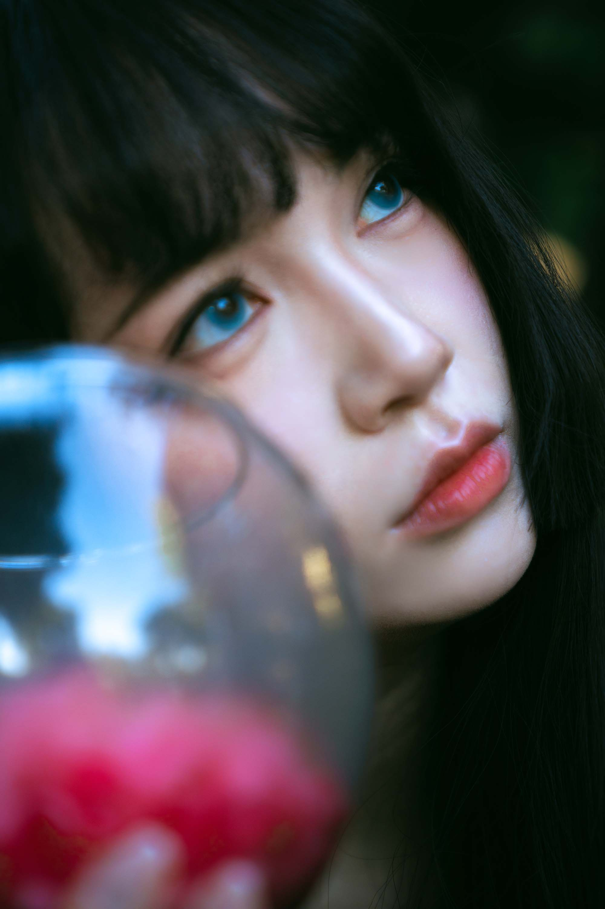
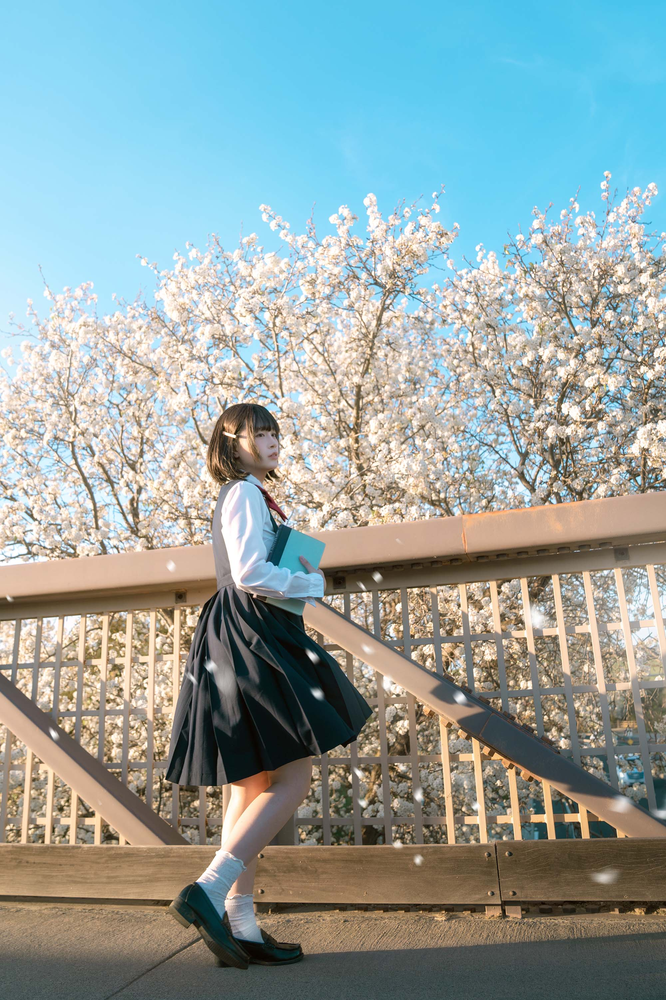
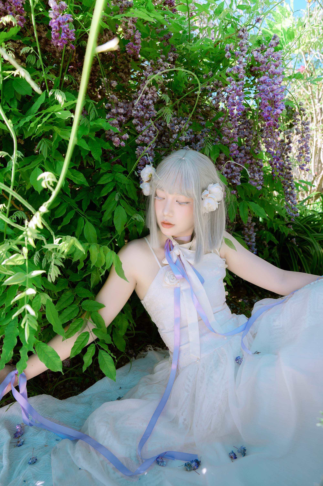

FIG. 02 — STYLING
Experiments in Form
Exploring how clothing, posture, and atmosphere shape the feeling of a portrait.
PERSONAL STUDIES · SELF-PORTRAIT
An exploration of light, identity, and self-expression.
Behind the camera, I explore the stories of others. In front of it, I discover new ways to express myself through light, styling, composition, and emotion. These personal studies are an ongoing exploration of how I see myself and the world around me.
A VISUAL JOURNAL BY JORSAGA PHOTO

01 / SELF-PORTRAITPERSONAL STUDY NO. 01
Becoming both the photographer and the subject offers a different way of seeing. Through light, composition, and expression, I explore the image I want to create and the person behind it.
A personal study in perspective, identity, and light.

FIG. 02 — STYLING
Exploring how clothing, posture, and atmosphere shape the feeling of a portrait.

FIG. 03 — EXPRESSION
A quiet exploration of emotion, identity, and the stories a portrait can hold.
Sometimes the most interesting story begins when I turn the lens toward myself.
NOTES ON PHOTOGRAPHYAN ONGOING JOURNAL
Each portrait is a small experiment in seeing, becoming, and understanding myself a little differently.